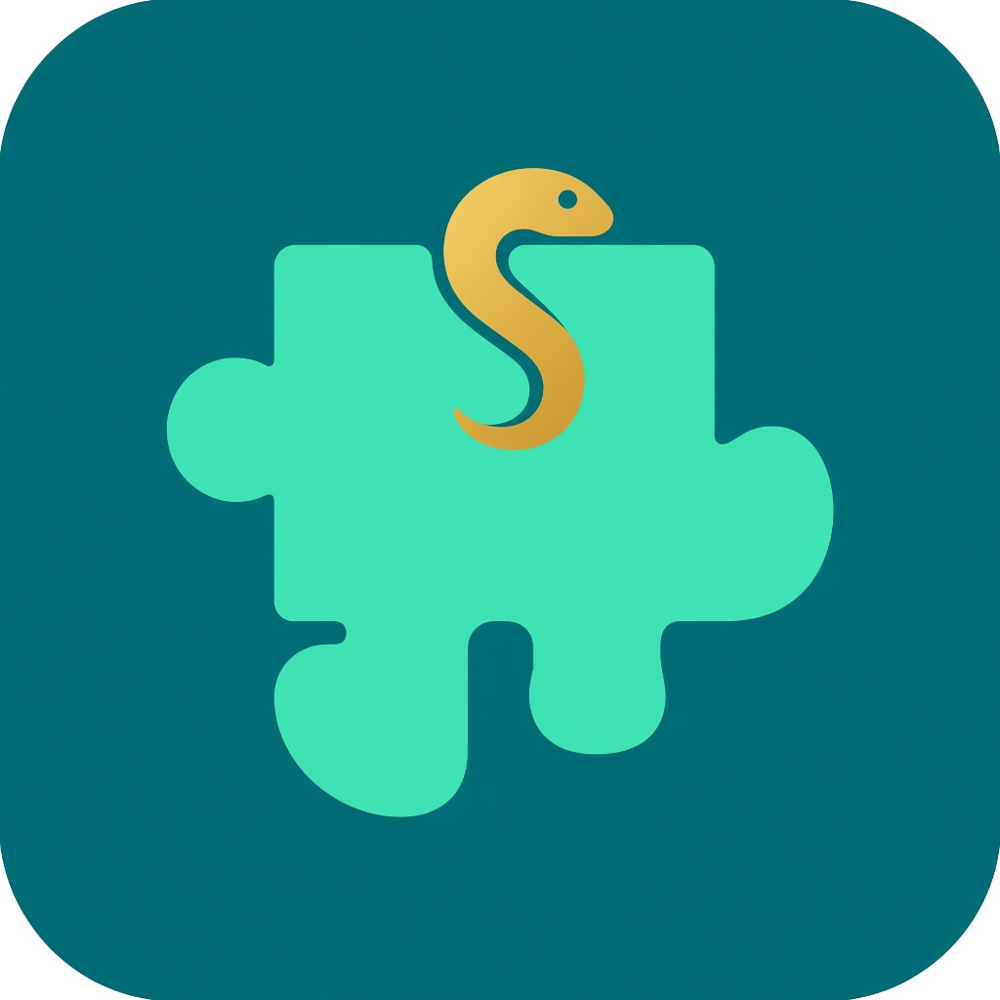

macOS
Apple 芯片，0.1.5。已用 Developer ID 签名。首次打开若被拦截，在访达里右键打开一次。
下载 dmg
Python 积木学习台给复旦 AIB110002《Python程序设计》用的桌面学习台。语法、正则、文件、Pandas 都是积木，范例可以逐步搭起来，做完能自己检查。助教面板可以按当前课题生成积木，输入 @ 能引用 data 里的文件。柱状图和折线图会保存在本机，并显示在运行结果里。
Apple 芯片，0.1.5。已用 Developer ID 签名。首次打开若被拦截，在访达里右键打开一次。
下载 dmg64 位安装包，内置 Python 和 Pandas。
下载 exeDebian、Ubuntu 用这个。
下载 debFedora、openSUSE 用这个。
下载 rpm四个安装包都是 0.1.5，对应 Apple 芯片 Mac、64 位 Windows、Debian/Ubuntu、Fedora/openSUSE。Intel Mac 暂无安装包。文件名对不上时打开发布页。